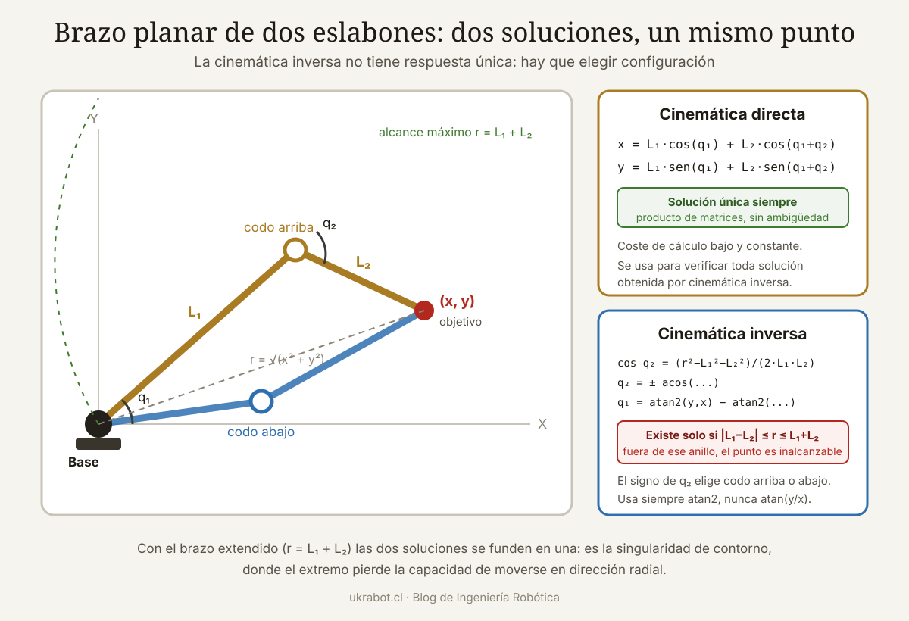

Qué cubre esta guía
- Los dos problemas fundamentales
- Matrices de transformación homogénea
- La convención Denavit-Hartenberg
- Cinemática directa en código
- Cinemática inversa: solución analítica
- Desacoplo cinemático en brazos de 6 ejes
- Solución numérica con el jacobiano
- Singularidades y espacio de trabajo
- De la teoría al brazo real
- Conclusión
- Preguntas frecuentes
Los dos problemas fundamentales
Todo control de un brazo robótico se apoya en dos preguntas complementarias:
- Cinemática directa: conozco los ángulos de todas las articulaciones, ¿dónde está el extremo del brazo? Es un problema de composición geométrica y siempre tiene una única solución.
- Cinemática inversa: quiero que el extremo esté en un punto y una orientación concretos, ¿qué ángulos debo aplicar? Es un problema de resolución de ecuaciones no lineales que puede tener múltiples soluciones, una sola o ninguna.
La asimetría entre ambos es la esencia del asunto. La directa es un cálculo mecánico que siempre funciona; la inversa es donde vive toda la dificultad real de la robótica de manipuladores.
| Aspecto | Cinemática directa | Cinemática inversa |
|---|---|---|
| Entrada | Ángulos articulares q | Pose deseada del extremo |
| Salida | Pose del extremo | Ángulos articulares q |
| Número de soluciones | Siempre una | 0, 1, varias o infinitas |
| Método | Multiplicación de matrices | Analítico o iterativo |
| Coste de cálculo | Bajo y constante | De bajo a alto y variable |
| Uso típico | Simulación, verificación | Planificación y control de trayectorias |
Matrices de transformación homogénea
Para describir dónde está y cómo está orientado un eslabón respecto de otro se usa una matriz de 4×4 que combina rotación y traslación en una sola operación:
┌ ┐
│ r11 r12 r13 px │
T = │ r21 r22 r23 py │
│ r31 r32 r33 pz │
│ 0 0 0 1 │
└ ┘
Bloque superior izquierdo 3×3: matriz de rotación R
Columna derecha (px, py, pz): vector de posición
Fila inferior: constante, permite componer por productoLa virtud de esta representación es que encadenar transformaciones es simplemente multiplicar matrices. Si conoces la transformación de la base al eslabón 1, del 1 al 2, y así sucesivamente, la pose del extremo respecto de la base es el producto ordenado de todas:
T_base_extremo = T01 · T12 · T23 · T34 · T45 · T56
El orden importa: las multiplicaciones de matrices no conmutan.
Rotar y luego trasladar no da el mismo resultado que
trasladar y luego rotar.Transformaciones elementales
Rotación de ángulo θ alrededor de Z:
┌ cosθ -senθ 0 0 ┐
│ senθ cosθ 0 0 │
│ 0 0 1 0 │
└ 0 0 0 1 ┘
Traslación de distancia d a lo largo de Z:
┌ 1 0 0 0 ┐
│ 0 1 0 0 │
│ 0 0 1 d │
└ 0 0 0 1 ┘La convención Denavit-Hartenberg
Describir cada eslabón con una matriz arbitraria funcionaría, pero sería un caos sin criterio común. La convención Denavit-Hartenberg (DH), propuesta en 1955, impone reglas para colocar los sistemas de coordenadas de modo que cada eslabón quede descrito por solo cuatro parámetros en lugar de seis.
| Parámetro | Símbolo | Definición | Variable en articulación |
|---|---|---|---|
| Ángulo de articulación | θᵢ | Rotación alrededor de Zᵢ₋₁ que alinea Xᵢ₋₁ con Xᵢ | Sí, si es rotacional |
| Desplazamiento del eslabón | dᵢ | Distancia a lo largo de Zᵢ₋₁ entre las normales comunes | Sí, si es prismática |
| Longitud del eslabón | aᵢ | Distancia a lo largo de Xᵢ entre Zᵢ₋₁ y Zᵢ | No, es constante |
| Ángulo de torsión | αᵢ | Rotación alrededor de Xᵢ que alinea Zᵢ₋₁ con Zᵢ | No, es constante |
La matriz que resulta de componer estas cuatro operaciones es:
┌ cosθ -senθ·cosα senθ·senα a·cosθ ┐
Ti = │ senθ cosθ·cosα -cosθ·senα a·senθ │
│ 0 senα cosα d │
└ 0 0 0 1 ┘Ejemplo: tabla DH de un brazo antropomórfico de 6 ejes
| i | θᵢ | dᵢ (mm) | aᵢ (mm) | αᵢ |
|---|---|---|---|---|
| 1 | q₁ | 290 | 0 | −90° |
| 2 | q₂ − 90° | 0 | 270 | 0° |
| 3 | q₃ | 0 | 70 | −90° |
| 4 | q₄ | 302 | 0 | 90° |
| 5 | q₅ | 0 | 0 | −90° |
| 6 | q₆ | 72 | 0 | 0° |
Cinemática directa en código
Con la tabla DH, implementar la cinemática directa es directo:
import numpy as np
def matriz_dh(theta, d, a, alpha):
"""Matriz de transformación DH clásica. Ángulos en radianes."""
ct, st = np.cos(theta), np.sin(theta)
ca, sa = np.cos(alpha), np.sin(alpha)
return np.array([
[ct, -st*ca, st*sa, a*ct],
[st, ct*ca, -ct*sa, a*st],
[ 0, sa, ca, d],
[ 0, 0, 0, 1]
])
def cinematica_directa(q, tabla_dh):
"""
q: lista de variables articulares en radianes
tabla_dh: lista de tuplas (offset_theta, d, a, alpha)
Devuelve la matriz 4x4 de la base al extremo.
"""
T = np.eye(4)
for qi, (off, d, a, alpha) in zip(q, tabla_dh):
T = T @ matriz_dh(qi + off, d, a, alpha)
return T
# Brazo antropomórfico de 6 ejes (mm y radianes)
TABLA = [
(0.0, 290.0, 0.0, -np.pi/2),
(-np.pi/2, 0.0, 270.0, 0.0),
(0.0, 0.0, 70.0, -np.pi/2),
(0.0, 302.0, 0.0, np.pi/2),
(0.0, 0.0, 0.0, -np.pi/2),
(0.0, 72.0, 0.0, 0.0),
]
q = np.deg2rad([0, -30, 45, 0, 60, 0])
T = cinematica_directa(q, TABLA)
print("Posición del extremo (mm):", np.round(T[:3, 3], 2))
print("Matriz de orientación:\n", np.round(T[:3, :3], 4))Esta función es la base de todo lo demás: se usa para verificar soluciones de cinemática inversa, para simular trayectorias y para calcular la matriz jacobiana por diferencias finitas cuando no se dispone de una expresión analítica.
Cinemática inversa: solución analítica
Cuando la geometría del brazo lo permite, existe una solución en forma cerrada: fórmulas explícitas que dan los ángulos directamente. Es la opción preferible siempre que sea posible, porque es rápida, exacta y determinista.
Caso base: brazo planar de dos eslabones
Es el ejemplo canónico y el que hay que entender antes que ningún otro. Dos eslabones de longitudes L₁ y L₂, dos articulaciones rotacionales, movimiento en el plano.
Datos: posición deseada (x, y)
Incógnitas: q1, q2
Por el teorema del coseno:
r² = x² + y²
cos(q2) = (r² − L1² − L2²) / (2·L1·L2)
Existe solución solo si |cos(q2)| ≤ 1, es decir:
|L1 − L2| ≤ r ≤ L1 + L2
Dos soluciones (codo arriba y codo abajo):
q2 = ± acos( (r² − L1² − L2²) / (2·L1·L2) )
Y para q1:
q1 = atan2(y, x) − atan2( L2·sen(q2), L1 + L2·cos(q2) )import numpy as np
def ci_planar_2dof(x, y, L1, L2, codo_arriba=True):
"""Cinemática inversa de un brazo planar de 2 GDL.
Devuelve (q1, q2) en radianes o None si es inalcanzable."""
r2 = x*x + y*y
r = np.sqrt(r2)
# Comprobación de alcanzabilidad
if r > L1 + L2 + 1e-9 or r < abs(L1 - L2) - 1e-9:
return None
c2 = (r2 - L1**2 - L2**2) / (2.0 * L1 * L2)
c2 = np.clip(c2, -1.0, 1.0) # protege contra error numérico
q2 = np.arccos(c2)
if not codo_arriba:
q2 = -q2
q1 = np.arctan2(y, x) - np.arctan2(L2*np.sin(q2), L1 + L2*np.cos(q2))
return q1, q2
# Verificación: resolver y comprobar con cinemática directa
L1, L2 = 200.0, 150.0
objetivo = (250.0, 100.0)
for arriba in (True, False):
sol = ci_planar_2dof(*objetivo, L1, L2, arriba)
if sol is None:
print("Punto inalcanzable")
continue
q1, q2 = sol
x = L1*np.cos(q1) + L2*np.cos(q1 + q2)
y = L1*np.sin(q1) + L2*np.sin(q1 + q2)
print(f"codo_arriba={arriba}: q1={np.degrees(q1):7.2f}° "
f"q2={np.degrees(q2):7.2f}° → ({x:.2f}, {y:.2f})")atan2(y, x) y nunca atan(y/x). La función de dos argumentos considera los signos de ambos y devuelve el ángulo en el cuadrante correcto en todo el rango de 360 grados, además de manejar el caso x = 0 sin división por cero. Es uno de los errores más frecuentes al implementar cinemática por primera vez.Desacoplo cinemático en brazos de 6 ejes
Resolver analíticamente un brazo de seis grados de libertad parece intratable, pero hay un truco que la mayoría de los robots industriales incorporan por diseño: si los tres últimos ejes se cortan en un punto común (muñeca esférica), el problema se separa en dos subproblemas de tres grados de libertad cada uno.
- Posición: los tres primeros ejes determinan la posición del centro de muñeca, que se obtiene retrocediendo desde el extremo a lo largo del eje de aproximación una distancia igual a la longitud de la herramienta.
- Orientación: los tres últimos ejes determinan la orientación, resolviendo una descomposición de ángulos de Euler sobre la matriz de rotación restante.
Cálculo del centro de muñeca:
p_muñeca = p_extremo − d6 · (tercera columna de R_deseada)
Después:
q1, q2, q3 ← geometría de posición (como el caso planar, extendido)
R_0_3 ← cinemática directa con q1, q2, q3
R_3_6 = R_0_3ᵀ · R_deseada
q4, q5, q6 ← ángulos de Euler extraídos de R_3_6Un brazo antropomórfico con muñeca esférica presenta hasta ocho soluciones: dos por la configuración de hombro (delante o detrás), dos por la de codo (arriba o abajo) y dos por la de muñeca (directa o volteada). Todas alcanzan exactamente la misma pose del extremo con posturas del brazo completamente distintas.
Cómo elegir entre las soluciones
| Criterio | Descripción | Cuándo aplicarlo |
|---|---|---|
| Mínimo desplazamiento articular | La solución más cercana a la posición actual | Movimientos continuos: es el criterio por defecto |
| Evitar colisiones | Descartar configuraciones que chocan con el entorno | Espacios de trabajo con obstáculos |
| Distancia a los límites articulares | Maximizar el margen antes del tope mecánico | Trayectorias largas |
| Manipulabilidad | Alejarse de las singularidades | Tareas que requieren fuerza o precisión |
| Gestión de cables | Evitar giros acumulados de la muñeca | Brazos con mangueras o cableado externo |
La gestión del recorrido de cables es un problema real que condiciona la elección de configuración; el artículo sobre gestión de cables para brazos robóticos desarrolla las soluciones mecánicas habituales.
Solución numérica con el jacobiano
Cuando el brazo no tiene una geometría que permita solución cerrada —muñeca no esférica, siete grados de libertad, cinemáticas exóticas— se recurre a métodos iterativos. La herramienta es la matriz jacobiana, que relaciona velocidades articulares con velocidades del extremo:
v = J(q) · q̇
donde:
v = vector de velocidad del extremo (6×1: lineal y angular)
J = matriz jacobiana (6×n)
q̇ = vector de velocidades articulares (n×1)
Invirtiendo la relación se obtiene el paso iterativo:
Δq = J⁺ · Δx
con J⁺ la pseudoinversa de J y Δx el error de pose.import numpy as np
def jacobiano_numerico(q, tabla_dh, h=1e-6):
"""Jacobiano de posición y orientación por diferencias finitas."""
n = len(q)
T0 = cinematica_directa(q, tabla_dh)
p0 = T0[:3, 3]
J = np.zeros((3, n)) # solo posición, por simplicidad
for i in range(n):
qp = np.array(q, dtype=float)
qp[i] += h
Tp = cinematica_directa(qp, tabla_dh)
J[:, i] = (Tp[:3, 3] - p0) / h
return J
def ci_numerica(objetivo, q_inicial, tabla_dh,
tol=1e-3, max_iter=200, lam=0.05):
"""Cinemática inversa por mínimos cuadrados amortiguados.
lam es el factor de amortiguación que estabiliza cerca
de las singularidades."""
q = np.array(q_inicial, dtype=float)
for it in range(max_iter):
T = cinematica_directa(q, tabla_dh)
error = np.array(objetivo) - T[:3, 3]
if np.linalg.norm(error) < tol:
return q, it, True
J = jacobiano_numerico(q, tabla_dh)
# Pseudoinversa amortiguada (Levenberg-Marquardt):
# evita valores enormes de Δq cerca de singularidades
JT = J.T
dq = JT @ np.linalg.solve(J @ JT + (lam**2) * np.eye(3), error)
# Paso limitado para evitar oscilaciones
paso_max = np.deg2rad(5)
norma = np.linalg.norm(dq)
if norma > paso_max:
dq = dq * (paso_max / norma)
q = q + dq
return q, max_iter, False
# Uso
objetivo = np.array([400.0, 100.0, 300.0])
q0 = np.deg2rad([0, -30, 45, 0, 60, 0])
q_sol, iteraciones, ok = ci_numerica(objetivo, q0, TABLA)
print("Convergió:", ok, "en", iteraciones, "iteraciones")
print("Ángulos (grados):", np.round(np.degrees(q_sol), 2))
print("Posición lograda:", np.round(cinematica_directa(q_sol, TABLA)[:3, 3], 2))| Método | Velocidad | Robustez | Soluciones múltiples | Uso recomendado |
|---|---|---|---|---|
| Analítico cerrado | Muy alta | Total | Las encuentra todas | Geometrías estándar |
| Jacobiano transpuesto | Media | Alta | Solo la cercana | Implementación simple |
| Pseudoinversa | Alta | Baja en singularidades | Solo la cercana | Lejos de singularidades |
| Mínimos cuadrados amortiguados | Alta | Muy alta | Solo la cercana | Opción general recomendada |
| Optimización con restricciones | Baja | Muy alta | Configurable | Redundancia y obstáculos |
Singularidades y espacio de trabajo
Una singularidad es una configuración en la que el brazo pierde uno o más grados de libertad instantáneos: existen direcciones en las que el extremo simplemente no puede moverse, por mucho que giren las articulaciones. Matemáticamente ocurre cuando el jacobiano pierde rango y su determinante se anula.
| Tipo | Configuración | Grado de libertad perdido | Cómo evitarla |
|---|---|---|---|
| De contorno | Brazo completamente extendido o plegado | Movimiento radial | Limitar el espacio útil al 90 % del alcance |
| De hombro | El centro de muñeca cruza el eje 1 | Rotación de la base | Excluir un cilindro alrededor del eje vertical |
| De muñeca | Ejes 4 y 6 alineados (q5 = 0) | Una rotación de la muñeca | Evitar q5 próximo a cero en la planificación |
| Interna | Alineaciones específicas del diseño | Variable | Mapeo previo del espacio de trabajo |
# Índice de manipulabilidad de Yoshikawa
# w → 0 indica proximidad a una singularidad
def manipulabilidad(q, tabla_dh):
J = jacobiano_numerico(q, tabla_dh)
return np.sqrt(np.linalg.det(J @ J.T))
# Alternativa más informativa: número de condición
def condicion(q, tabla_dh):
J = jacobiano_numerico(q, tabla_dh)
s = np.linalg.svd(J, compute_uv=False)
return s[0] / s[-1] if s[-1] > 1e-12 else np.inf
# Regla práctica: vigilar el número de condición durante la
# trayectoria y replanificar si supera un umbral (p. ej. 50)Espacio de trabajo
- Espacio alcanzable: conjunto de puntos que el extremo puede tocar con alguna orientación.
- Espacio diestro: subconjunto donde puede alcanzarse el punto con cualquier orientación. Es siempre bastante menor, y es el que realmente importa para tareas de manipulación.
Determinar estos volúmenes analíticamente es complejo en brazos de seis ejes; en la práctica se mapean por muestreo, evaluando la cinemática directa en una rejilla densa de configuraciones articulares y registrando qué puntos resultan alcanzables y con qué manipulabilidad.
De la teoría al brazo real
La cinemática perfecta sobre un brazo mal caracterizado da resultados mediocres. Los factores que degradan la precisión en la práctica:
| Fuente de error | Magnitud típica | Mitigación |
|---|---|---|
| Tolerancias de fabricación | 0,1 a 1 mm | Calibración cinemática con medición externa |
| Holgura en reductores | 0,05° a 1° | Reductores de precisión; aproximación siempre en el mismo sentido |
| Flexión bajo carga | 0,1 a 2 mm | Modelo de rigidez; compensación por software |
| Resolución del encoder | 0,01° a 0,1° | Encoders absolutos de mayor resolución |
| Deriva térmica | 0,05 mm/°C | Precalentamiento; compensación por temperatura |
| Error de referenciado (homing) | 0,1° a 0,5° | Referencias mecánicas repetibles |
La elección de reductores y de sistema de realimentación condiciona directamente la precisión alcanzable: los artículos sobre reductores harmonic drive y sobre encoders de articulación desarrollan estos dos aspectos.
Bibliotecas que evitan reinventar la rueda
- Robotics Toolbox for Python (Peter Corke): cinemática directa e inversa, jacobianos, planificación y visualización. La referencia académica.
- MoveIt (ROS 2): planificación de movimiento completa con evitación de colisiones. Integra varios solucionadores de cinemática inversa.
- IKFast (OpenRAVE): genera código C++ de solución analítica a partir de la descripción del robot. Extremadamente rápido.
- Pinocchio: biblioteca de dinámica y cinemática de alto rendimiento usada en robótica de investigación.
- KDL (Orocos): solucionadores numéricos clásicos, integrados en ROS.
Implementar la cinemática a mano tiene un valor didáctico enorme y es la forma de entender qué ocurre por dentro. Para un sistema en producción, usa una biblioteca probada: el manejo de casos límite, singularidades y precisión numérica que incorporan representa años de trabajo. Si tu proyecto se orienta a ROS 2, la guía de hardware compatible con ROS 2 cubre la parte física.
Conclusión
La cinemática directa es un problema resuelto: cuatro parámetros por eslabón, una multiplicación de matrices y tienes la pose del extremo con certeza absoluta. Toda la dificultad real de la robótica de manipuladores vive en el problema inverso.
Si tu brazo tiene una geometría estándar —y la mayoría de los industriales la tienen por diseño, con muñeca esférica precisamente para permitirlo— busca la solución analítica: es rápida, exacta y te entrega todas las configuraciones posibles para que elijas la mejor. Reserva los métodos numéricos para geometrías que no admiten forma cerrada, y usa siempre la variante amortiguada: la pseudoinversa pura se vuelve inestable justo donde más falta hace la estabilidad.
Y no olvides el paso que separa la simulación de la realidad: las singularidades deben tratarse explícitamente en el control, no descubrirse cuando el brazo hace un movimiento inesperado con una herramienta montada. Mapea tu espacio de trabajo, vigila el número de condición del jacobiano durante la trayectoria, y define zonas de exclusión antes de que el hardware te enseñe por qué eran necesarias.
Preguntas frecuentes
¿Por qué la cinemática inversa puede tener varias soluciones?
Porque distintas configuraciones articulares alcanzan la misma pose del extremo. En un brazo planar de dos eslabones existen dos soluciones, llamadas codo arriba y codo abajo, que sitúan el extremo exactamente en el mismo punto. En un brazo antropomórfico de seis ejes con muñeca esférica hay hasta ocho: dos configuraciones de hombro, dos de codo y dos de muñeca. El controlador debe elegir una, normalmente la más cercana a la posición actual para minimizar el movimiento, descartando las que producen colisión o exceden los límites articulares.
¿Qué es una singularidad y por qué es peligrosa?
Una singularidad es una configuración en la que el brazo pierde grados de libertad instantáneos: hay direcciones en las que el extremo no puede moverse aunque las articulaciones giren. Matemáticamente ocurre cuando el determinante del jacobiano se anula. El peligro está en su vecindad: para lograr una velocidad pequeña del extremo se requieren velocidades articulares enormes, y un controlador que no lo detecte ordenará movimientos violentos. Por eso se vigila el índice de manipulabilidad o el número de condición del jacobiano y se replanifica la trayectoria antes de entrar en esa zona.
¿Debo usar Denavit-Hartenberg clásica o modificada?
Ambas son correctas y describen la misma geometría; lo importante es no mezclarlas. La convención clásica es la más extendida en la literatura académica clásica y en los cursos introductorios. La modificada, propuesta por Craig, coloca el sistema de referencia en el extremo proximal del eslabón y resulta más intuitiva para cadenas ramificadas, además de ser la que usan varias bibliotecas modernas. Cuando tomes parámetros de una fuente externa, verifica siempre qué convención emplea: usar la matriz equivocada con parámetros de la otra produce resultados erróneos difíciles de diagnosticar.
¿Cuándo conviene la solución numérica frente a la analítica?
La solución analítica es preferible siempre que exista: es más rápida, exacta y entrega todas las configuraciones posibles. Los métodos numéricos son necesarios cuando la geometría no admite forma cerrada, como en brazos sin muñeca esférica, manipuladores redundantes de siete o más grados de libertad, o cuando se quieren incorporar restricciones adicionales como evitación de obstáculos u optimización de postura. También son útiles como recurso general cuando se trabaja con muchos robots distintos y no se quiere derivar una solución específica para cada uno.
¿Qué precisión real puedo esperar en un brazo impreso en 3D?
Con eslabones impresos en 3D, servos estándar y sin calibración, la repetibilidad típica se sitúa entre 1 y 5 milímetros, y la precisión absoluta puede ser considerablemente peor. Los factores dominantes son la holgura de los engranajes del servo, la flexión de las piezas plásticas bajo carga y las tolerancias de montaje. Mejorar esto exige reductores con menos holgura, eslabones más rígidos, encoders en la articulación en lugar de en el motor, y una calibración cinemática que ajuste los parámetros del modelo a la geometría real medida del brazo construido.
¿Sirve la misma cinemática para un robot delta o SCARA?
Los principios son los mismos pero las ecuaciones son completamente distintas. Un SCARA es esencialmente un brazo planar de dos eslabones más un eje vertical y una rotación, y su cinemática inversa es sencilla y cerrada. Un robot delta es una cadena cinemática paralela, no serie, y en él la relación se invierte respecto de lo habitual: su cinemática inversa es directa de calcular mientras que la directa requiere resolver la intersección de tres esferas. La convención Denavit-Hartenberg está pensada para cadenas serie y no se aplica a mecanismos paralelos.
Este artículo es contenido editorial independiente: no contiene ubicaciones patrocinadas ni enlaces de afiliado. Si en futuras actualizaciones se agregan enlaces a proveedores de componentes, serán identificados explícitamente. El código y las conexiones son referenciales y deben adaptarse y probarse con tu propio hardware. Si detectas un error en esta guía, por favor avísanos.
Sigue aprendiendo
Complementa la teoría con la parte física: los reductores harmonic drive determinan la holgura, y los encoders de articulación la realimentación de posición.
Fuentes primarias y lecturas recomendadas
Referencias académicas estándar en cinemática de manipuladores y documentación de las bibliotecas citadas.
- Peter Corke — Robotics Toolbox for Python, documentación
- Denavit y Hartenberg — Artículo original sobre notación cinemática (1955)
- MoveIt 2 — Marco de planificación de movimiento para ROS 2
- Orocos KDL — Biblioteca de cinemática y dinámica
- Pinocchio — Biblioteca de dinámica de cuerpos rígidos
- Yoshikawa — Medida de manipulabilidad de mecanismos robóticos
Enlaces revisados: 15 de agosto de 2026.